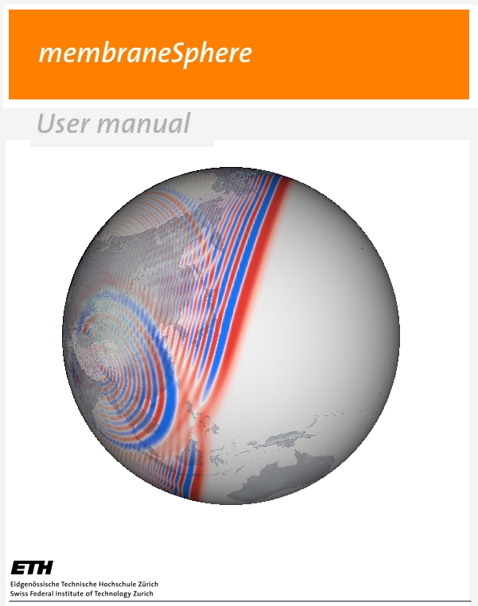
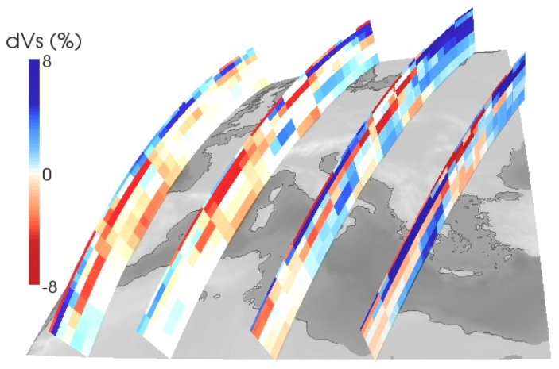

Downloads
Open source
|
SPECFEM2D
Software package using the spectral-element method for two-dimensional acoustic, (an)elastic, poroelastic or coupled acoustic-(an)elastic-poroelastic simulations. |

|
|
SPECFEM3D
Software package using the spectral-element method for local to regional scale simulations. |

|
|
SPECFEM3D_GLOBE
Software package using the spectral-element method for global and regional scale simulations. |

|
Membrane software

membraneSphere-1.0.zip [2008-4-1]
Version 1.0
Software package membraneSphere simulates membrane waves over the whole globe.
This finite-differences code written in Fortran90 also includes the calculation
of global phase-delay sensitivity kernels with respect to phase-velocities for seismic surface waves
using an adjoint method.
Tomography model

mediterranean-Vs-model.txt
A shear-wave speed model for the European-Mediterranean region, defined as a 1x1 degree block model.